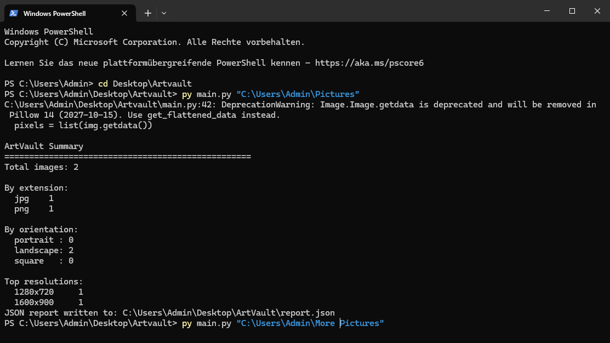

Eddy
Ausbildung Anwendungsentwicklung · 2026
I build small, practical tools with a focus on clarity, safety, and incremental improvement.
Projects
ArtVault
A Python CLI tool to scan and safely organize image archives.
- Recursive scan of image archives
- Collision-safe file operations (no overwrites)
- Dry-run mode for previewing file operations
- JSON reporting for automation use

Next project
Building a second CLI tool interacting with a public web API.
How I work
I work in small, verifiable steps: readable code, meaningful commits, explicit error handling, and documentation that reflects real behavior.
Contact
GitHub: github.com/<Art1fic1al>
Email: bayok_edgar@aol.com